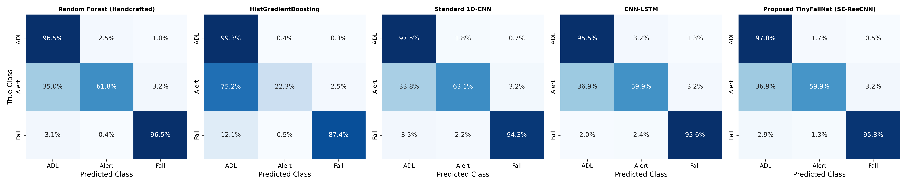
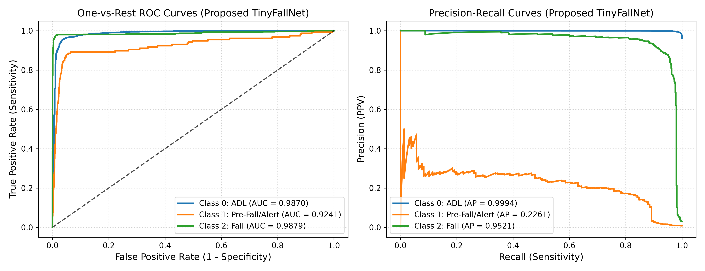
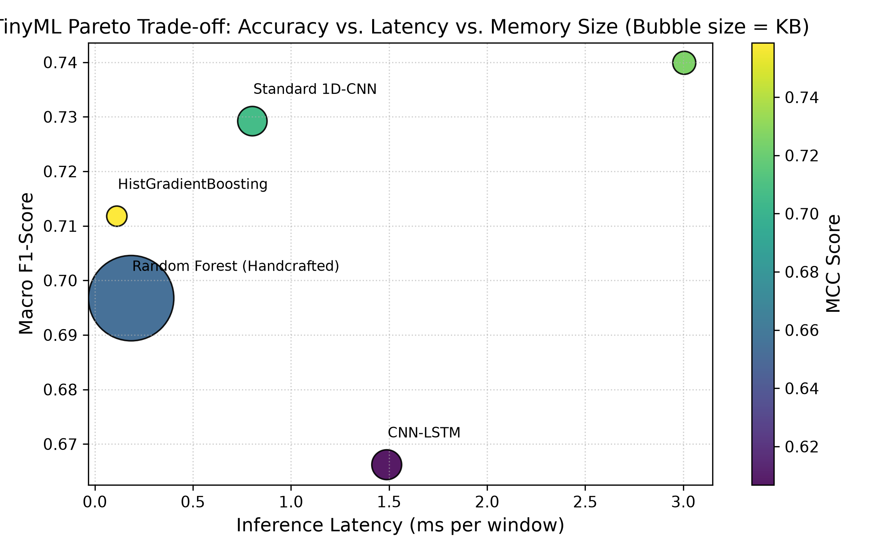
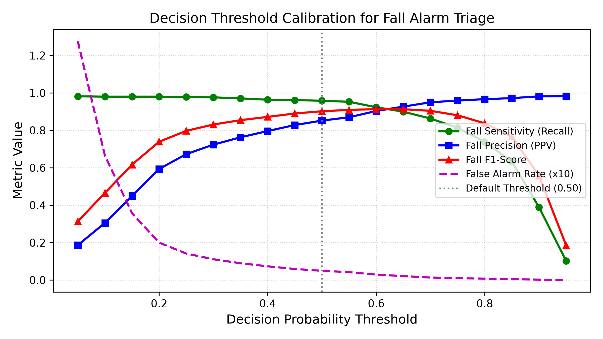
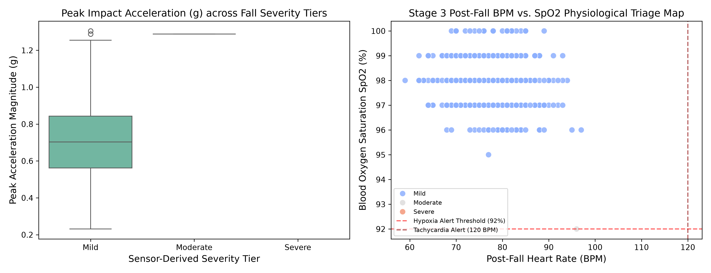

0System Pipeline
📡 IMU Sensor Data
6-axis, 256-sample windows
6-axis, 256-sample windows
→
🔧 Feature Extraction
88 Statistical Features
88 Statistical Features
→
🧠 Fall Classification
5 Models Evaluated
5 Models Evaluated
→
📊 Severity Assessment
Impact + Immobility Index
Impact + Immobility Index
→
💓 BPM / SpO₂ Triage
Simulated Physiological
Simulated Physiological
→
🚨 Priority Alert
STANDARD / HIGH / URGENT
STANDARD / HIGH / URGENT
1Dataset Overview
116,988
Total IMU Windows
256
Samples per Window
6
IMU Channels (Acc + Gyro)
88
Extracted Features
77,871
Training Samples
20,233
Validation Samples
18,884
Test Samples
~96%
Class Imbalance (ADL)
Class Distribution — Full Dataset
Train / Val / Test Split
2Model Architecture Benchmark (Test Set, N = 18,884)
| Model | Accuracy ↑ | Balanced Acc ↑ | Macro F1 ↑ | Fall Sensitivity ↑ | Fall FAR ↓ | Fall F1 ↑ | Fall ROC-AUC ↑ | MCC ↑ | Train Time (s) |
|---|
★ Proposed model | ↑ Higher is better | ↓ Lower is better | FAR = False Alarm Rate | MCC = Matthews Correlation Coefficient
Fall Sensitivity vs Fall F1 Score
Macro F1 vs Balanced Accuracy
3Proposed TinyFallNet — Per-Class Metrics
97.45%
Overall Accuracy
84.50%
Balanced Accuracy
74.0%
Macro F1 Score
95.80%
Fall Sensitivity
89.88%
Fall F1 Score
0.726
MCC
0.9879
Fall ROC-AUC
0.9521
Fall PR-AUC
Class 0 — ADL / Normal Activity
TP
17,785
FP
74
FN
395
TN
630
Sensitivity / Recall97.83%
Specificity89.49%
Precision99.59%
F1 Score98.70%
G-Mean93.57%
ROC-AUC (OvR)0.9870
DOR383.3
Support18,180
Class 1 — Pre-Fall / Alert
TP
94
FP
312
FN
63
TN
18,415
Sensitivity / Recall59.87%
Specificity98.33%
Precision23.15%
F1 Score33.39%
G-Mean76.73%
ROC-AUC (OvR)0.9241
DOR88.07
Support157
Class 2 — Fall ⚠️ (Primary Target)
TP
524
FP
95
FN
23
TN
18,242
Sensitivity / Recall95.80%
Specificity99.48%
Precision (PPV)84.65%
NPV99.87%
F1 Score89.88%
False Alarm Rate0.52%
Miss Rate (FNR)4.20%
G-Mean97.62%
DOR4,374.7
ROC-AUC (OvR)0.9879
PR-AUC (OvR)0.9521
MCC0.897
Support547
4TinyML Hardware Profiling
| Model | Parameters | FP32 Size (KB) | INT8 Size (KB) | Latency (ms) | Throughput (inf/s) | MCU RAM Util (%) | MCU Feasibility |
|---|
Model Size (INT8 KB) vs Latency (ms)
Parameter Count Comparison
5Loss Function & Class-Balancing Ablation Study
| Loss Configuration | Accuracy ↑ | Balanced Acc ↑ | Macro F1 ↑ | Fall Sensitivity ↑ | Fall FAR ↓ | Fall F1 ↑ | MCC ↑ |
|---|
Fall Sensitivity vs MCC Across Loss Configurations
6Decision Threshold Calibration Study (Fall Class)
τ = 0.25
Optimal Balanced Point
97.81%
Sensitivity @ τ=0.25
79.73%
F1 Score @ τ=0.25
τ = 0.50
Default Threshold
95.80%
Sensitivity @ τ=0.50
90.19%
F1 Score @ τ=0.50
τ = 0.05
Maximum Sensitivity Point
98.17%
Sensitivity @ τ=0.05
Sensitivity / Specificity / F1 / FAR vs Decision Threshold
| Threshold (τ) | Sensitivity ↑ | Specificity ↑ | Precision ↑ | F1 Score ↑ | FAR ↓ | MCC ↑ | TP | FP | FN | TN |
|---|
7Sensor-Derived Fall Severity & Post-Fall Physiological Triage
619
Confirmed Fall Detections
618
Mild Severity (99.8%)
1
Moderate Severity (0.2%)
618
STANDARD Triage (Tier 3 Green)
1
HIGH Triage (Tier 2 Yellow)
0
URGENT Triage (Tier 1 Red)
Triage Priority Distribution
Severity Category Breakdown
Triage Stage Definitions
| Priority | Tier | Colour Code | Severity Index | Action |
|---|---|---|---|---|
| URGENT | Tier 1 | 🔴 Red | > 80 | Immediate Emergency Dispatch |
| HIGH | Tier 2 | 🟡 Yellow | 50–80 | Caregiver Call & Review |
| STANDARD | Tier 3 | 🟢 Green | < 50 | Self-Recovery Monitoring |
8Publication Figures (300 DPI)

Fig. 1 — Normalized confusion matrices for all five evaluated architectures. TinyFallNet achieves the best trade-off between fall detection and false alarm suppression.

Fig. 2 — One-vs-Rest ROC (AUC) and Precision-Recall curves for the proposed TinyFallNet. Fall class: ROC-AUC = 0.9879, PR-AUC = 0.9521.

Fig. 3 — TinyML Pareto frontier: Accuracy vs Inference Latency vs Model Memory. TinyFallNet achieves the optimal compact footprint with competitive accuracy.

Fig. 4 — Fall-class decision threshold calibration sweep (τ = 0.05 to 0.95). Optimal clinical operating point identified at τ = 0.25.

Fig. 5 — Sensor-derived fall severity index distribution and simulated post-fall BPM / SpO₂ physiological triage scatter by priority tier.